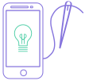
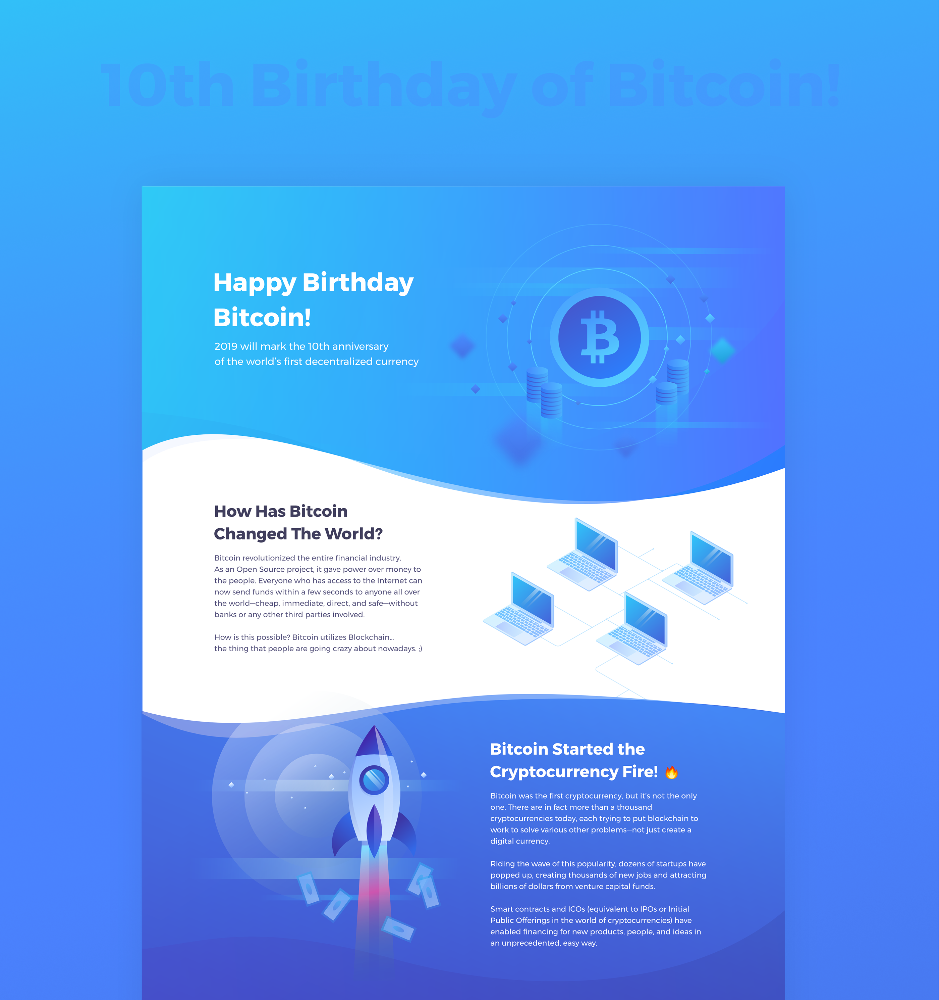
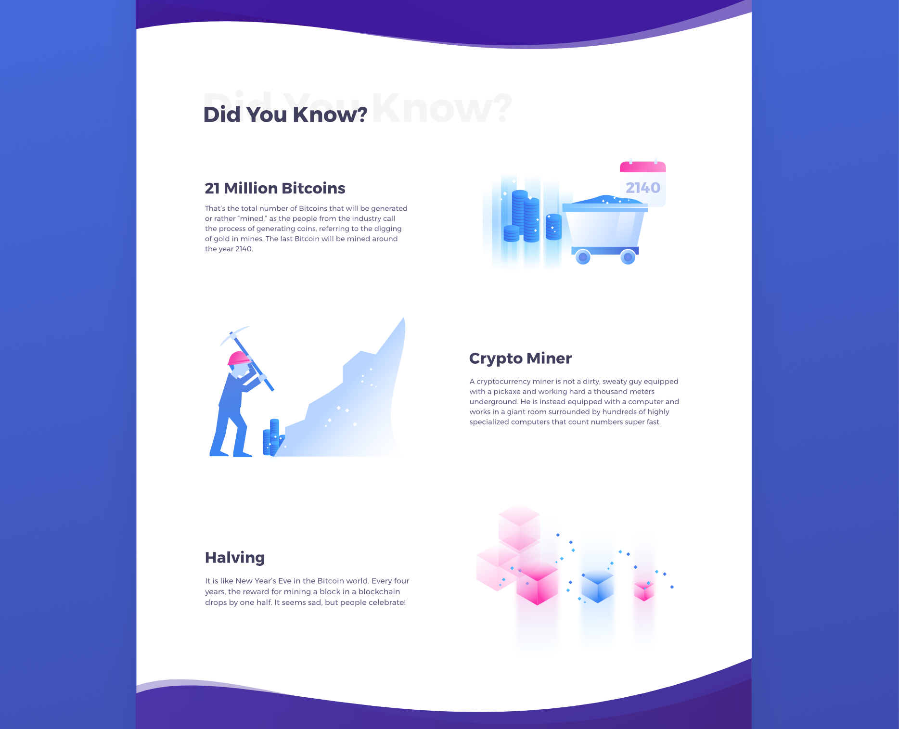

10 Years of Bitcoin - Infographic

Challenges
Show nice and “catchy” infographics describing Bitcoin as an innovative technology that revolutionized financial industry and payments
Achieve as many watches as possible including shared links. Arouse positive feelings about Bitcoin/cryptocurrencies. Recall few important things about this technology but not going into detail to deep
Make it appealing to our target group - people from 20 to 35 years old that have heard something about Bitcoin. Fascinated internet/technology novelties. Well paid, open-minded, relaxed.

Solutions
- Make the infographic engaging for the users by using a lot of custom designed illustrations. They reflect the content in a quite abstract and suggestive way at the same time.
- Base on the current design trends that can be associated with future technologies such as vivid neon colors, gradients, transparencies, morphic shapes, and isometric illustrations
- Introduce the clear section division to avoid the monotonous look and introduce the visual diversity
- Present the timeline in a more attractive and engaging way by designing the icons referring to the content
- Keep the reasonable length of the infographic to avoid the situation when the user is bored with the content
Tools used
Sketch / Affinity Designer / Zeplin

